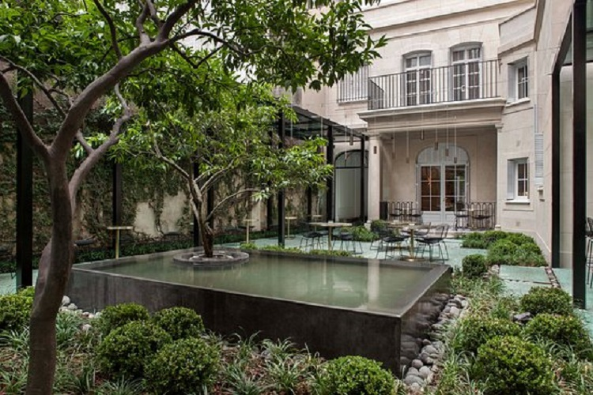
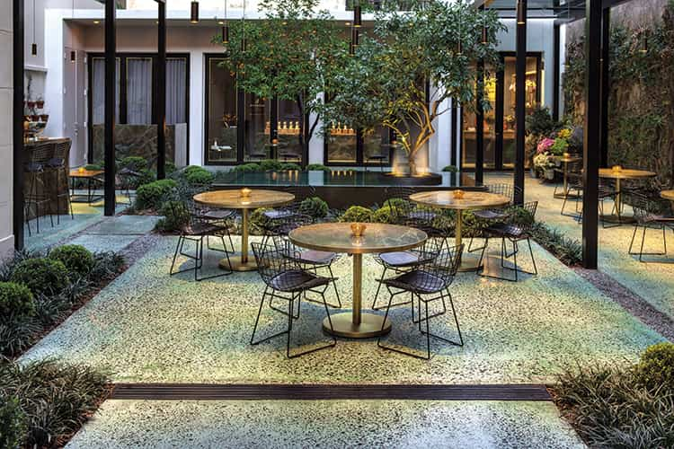
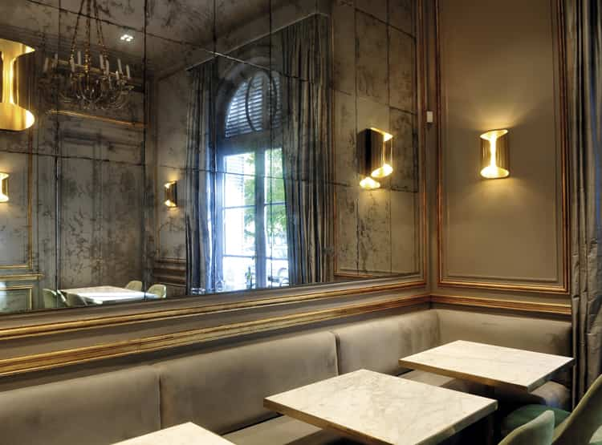

Casa Cavia
Casa Cavia supo ser y continúa siendo ante todo una casa. Construida en 1927 por el arquitecto y artista noruego Alejandro Christophersen, referente de la arquitectura ecléctica, fue cuidadosamente restaurada para transformarse en lo que hoy es: una vuelta a las maravillas de la Belle Époque en Buenos Aires en diálogo con la contemporaneidad de nuestro presente. Una casa que nos reúne, apasionados por nuestro pasado y por nuestro presente. Una casa que celebra los oficios que contiene: la arquitectura, los libros, la comida y las flores.

Un rincón donde el encuentro es posible y es nuestra premisa. Entendemos que es ahí donde germina la creatividad. Un espacio donde la rutina se detiene para dar lugar al goce y la reflexión.
En los dorados años veinte, un señor de familia acomodada encarga al prestigioso arquitecto y artista plástico noruego Alejandro Christophersen un singular regalo para su esposa. Se trata de una residencia ubicada en la calle Cavia del barrio de Palermo Chico, frente a la arboleda de una plaza diseñada a comienzos del siglo XX por el paisajista Carlos Thays, que varias décadas más tarde tomará el nombre de Plaza Alemania. Corren vientos de cambio: Buenos Aires se está transformando en una ciudad bella, moderna, con gran desarrollo cultural y edilicio.
En ese marco, Christophersen (1866-1946) proyecta una casona despojada y austera, representativa de su estilo historicista ecléctico. Educado en la École des Beaux-Arts de París y vinculado a la elite porteña desde 1888, pone en juego un estilo que postula la libertad del arquitecto frente al material proporcionado por la historia. Y Christophersen despliega esta libertad en la variedad de referentes históricos que, desde el proyecto, se expresan en el uso del edificio.
“El arte arquitectónico moderno no se deja atrapar por los detalles —escribió el noruego— sino que le da un giro nuevo a una idea antigua.

Esta idea se manifiesta en toda la obra de Christophersen, como el Palacio Anchorena —hoy Palacio San Martín, sede del Ministerio de Relaciones Exteriores—, la Basílica Santa Rosa de Lima, la Iglesia Ortodoxa Rusa, el Hospital de Niños Pedro Elizalde y la Compañía Nueva de Gas, además de numerosas viviendas con la tipología petit hôtel, que en su mayoría fueron demolidas. La casa de la calle Cavia es una de las pocas residencias familiares proyectadas por él que se conservan.
Un siglo después —a pocos años del fallecimiento de su dueña, ya centenaria—, en el año 2011, el Gobierno de la Ciudad de Buenos Aires decide proteger la casa, de gran valor patrimonial por la calidad en el estilo, la composición, los materiales y la coherencia tipológica. Según el proyecto de ley para la protección de la vivienda, con esta obra Christophersen captura “la esencia misma del grand siècle”. Su fachada presenta “un equilibrado juego de masas y luz, sintético y refinado”.
Originalmente llamada Residencia Bollini Roca, la vivienda ubicada en Cavia 2985 es puesta en valor y resignificada en 2014 para convertirse en Casa Cavia.

Casa Cavia se encuentra en los límites de un barrio tradicional y sofisticado, pero a la vez dinámico: Palermo Chico. Diseñado por el paisajista francés Carlos Thays en 1912, este barrio invita a transitar el silencio de sus calles empedradas, rodeadas por arboledas añosas. Allí donde el tiempo parece transcurrir con menos prisa, se asoman tanto edificios clásicos —destinados a residencias particulares o embajadas— como imponentes torres de arquitectura contemporánea.
En las orillas del barrio, sobre la calle Cavia entre Libertador y Castex, se encuentra Casa Cavia, que se revela como una pieza arquitectónica noble, de valor patrimonial. Sus ventanas asoman a la Plaza Alemania, otro sitio emblemático. Se trata de un espacio verde diseñado también por Carlos Thays, en el que se destaca la fuente Riqueza agropecuaria argentina, obra del escultor Gustav Adolf Bredow, donada por la colectividad alemana en el centenario de la Argentina. Las tipas, araucarias y geranios —junto a los que solemos ver a los vecinos caminar, correr o descansar luego de una jornada deportiva— completan el paisaje de la plaza y contribuyen, sin duda, al cálido entorno de Casa Cavia.